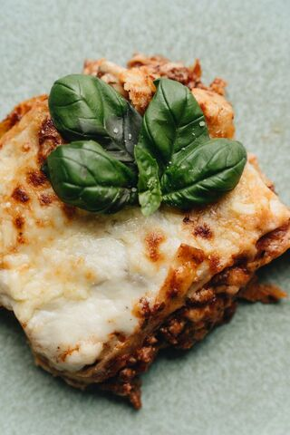

Lasagna

Description
Lasagna is arguably the best dish in the world.
It is made with pasta, Bolognese, and béchamel sauce. The recipe below, is the original italian one.
Ingredients (for 8 servings):
For the pasta:
- Fresh egg lasagna sheets
For the Bolognese sauce:
- Ground beef: 700 g
- Tomato passata: 350 g
- Fresh pork belly: 270 g
- Carrots: 110 g
- Celery: 110 g
- Yellow onions: 110 g
- Vegetable broth: 350 g
- Red wine: 110 g
- Double concentrated tomato paste: 30 g
- Extra virgin olive oil: 90 ml
- Fine salt: to taste
- Black pepper: to taste
For the béchamel sauce
- Whole milk: 800 g
- Butter: 50 g
- All-purpose flour: 50 g
- Nutmeg: to taste
- Fine salt: to taste
For the topping:
- Parmigiano Reggiano DOP (grated): 150 g
- Butter: to taste
Steps
- Make the ragù: Finely dice the carrot, celery, and onion. In a pot with hot olive oil,
brown the minced pork belly (pancetta), then add the chopped vegetables and cook gently until softened.
- Add the minced beef, cook until well browned and dry, then pour in the red wine and let it completely
evaporate.
- Stir in the tomato paste, tomato passata, and hot vegetable broth. Cover and simmer on low heat for about 2
hours, seasoning with salt and pepper halfway through.
- Make the béchamel sauce: In a small saucepan, heat the milk without boiling. In another
pan, melt the butter, stir in the flour all at once, and cook for a few minutes until golden. Gradually
whisk in the hot milk, season with salt and nutmeg, and cook until smooth and creamy.
- Parboil the pasta: Cook the fresh lasagna sheets in lightly salted boiling water for about
30-40 seconds each, then drain and lay them flat on a clean kitchen towel to remove excess water.
- Assemble: Spread a thin layer of béchamel and ragù on the bottom of a 30x20 cm baking dish.
Add a pasta sheet, then layer with béchamel, ragù, and grated Parmigiano Reggiano. Repeat to create 6
layers.
- Bake: Cover the top layer with the remaining ragù, plenty of Parmigiano Reggiano, and a few
small cubes of butter. Bake in a preheated oven at 170°C (340°F) for about 40 minutes, then let it rest for
a few minutes before serving.
Home